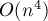

MAXimal
добавлено: 11 Jun 2008 11:13
редактировано: 15 Jul 2014 17:13
Содержание [скрыть]
Интегрирование по формуле Симпсона
Требуется посчитать значение определённого интеграла:
Решение, описываемое здесь, было опубликовано в одной из диссертаций Томаса Симпсона (Thomas Simpson) в 1743 г.
Формула Симпсона
Пусть  — некоторое натуральное число. Разобьём отрезок интегрирования
— некоторое натуральное число. Разобьём отрезок интегрирования ![[a;b]](../tex2png/cache/2876eb358dba6f6f1347e3e76bed79d6.png) на
на  равных частей:
равных частей:
Теперь посчитаем интеграл отдельно на каждом из отрезков , а затем сложим все значения.
Итак, пусть мы рассматриваем очередной отрезок . Заменим функцию  на нём параболой, проходящей через 3 точки . Такая парабола всегда существует и единственна. Её можно найти аналитически, затем останется только проинтегрировать выражение для неё, и окончательно получаем:
на нём параболой, проходящей через 3 точки . Такая парабола всегда существует и единственна. Её можно найти аналитически, затем останется только проинтегрировать выражение для неё, и окончательно получаем:
![\int_{x_{2i-2}}^{x_{2i}} f(x) dx = \left( f(x_{2i[...]](../tex2png/cache/5297672110131bc921e4ca4aeaec0296.png)
Складывая эти значения по всем отрезкам, получаем окончательную формулу Симпсона:
Погрешность
Погрешность, даваемая формулой Симпсона, не превосходит по модулю величины:
Таким образом, погрешность имеет порядок уменьшения как .
Реализация
Здесь — некоторая пользовательская функция.
double a, b; // входные данные const int N = 1000*1000; // количество шагов (уже умноженное на 2) double s = 0; double h = (b - a) / N; for (int i=0; i<=N; ++i) { double x = a + h * i; s += f(x) * ((i==0 || i==N) ? 1 : ((i&1)==0) ? 2 : 4); } s *= h / 3;